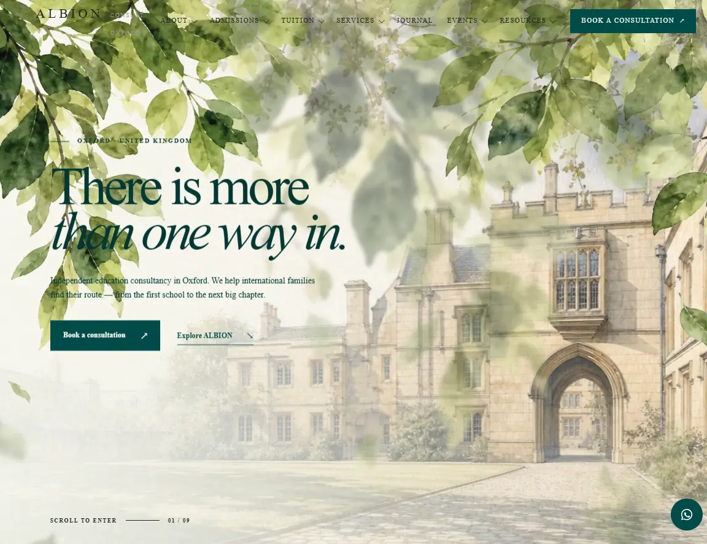
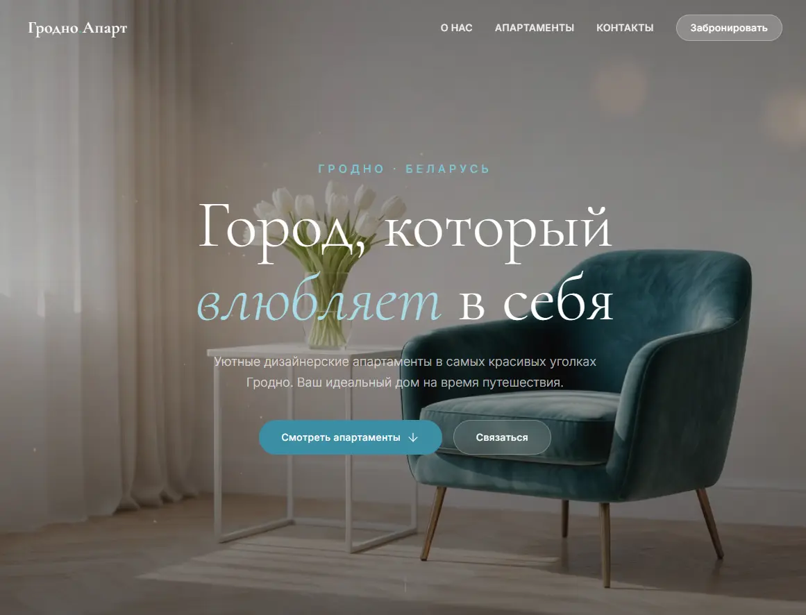
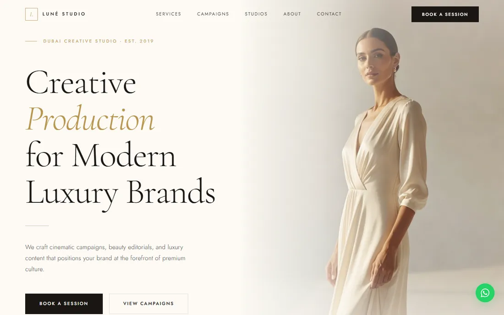
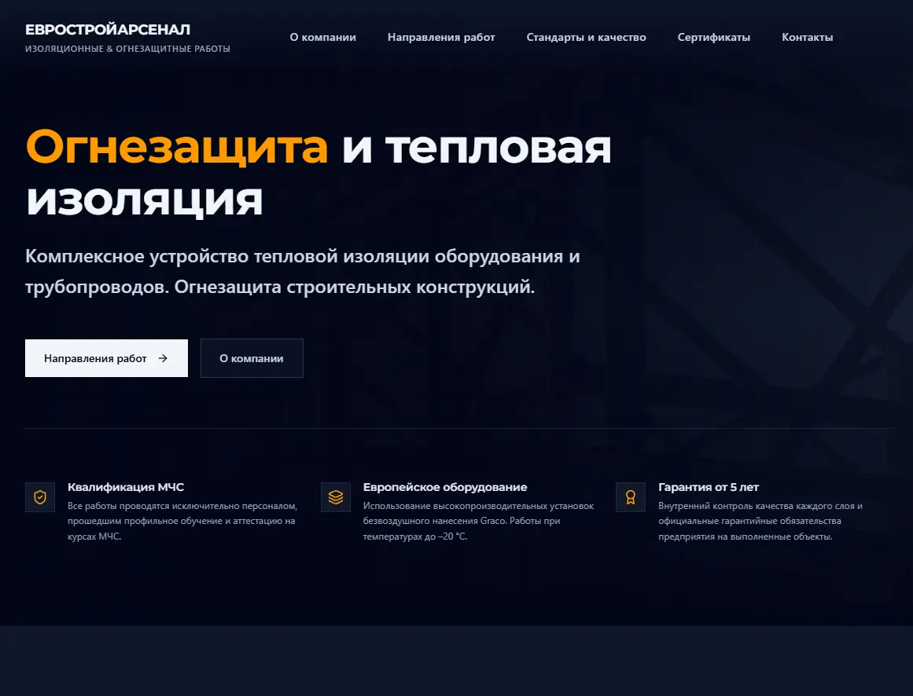

Максим Бушенко
Разработка · Боты · Автоматизация
Сайты, боты и автоматизация. Дизайн и разработка в одних руках: от макета до публикации.
Написать в Telegrammaxim.bushenko@gmail.com3D-путешествие по проектам
Чем занимаюсь
Сайты под ключ
Структура и дизайн, вёрстка, анимация, формы и калькуляторы, публикация.
SEO
Структура, семантика, тексты и техническая оптимизация.
Telegram- и WhatsApp-боты
Сценарии, интеграции по API, роли и права, собственная база.
Автоматизация и аналитика
Сбор данных, расчёты, веб-панели и отчёты в Excel.
Сайты и SEO · Четыре последних проекта
Дизайн и разработка сайтов в одних руках: от макета до публикации.
-

ALBION Consult
Консалтинг · Оксфорд · SEO
Сайт консалтинговой компании из Оксфорда, собранный вместе с SEO-стратегией: маршрут поступления в пять этапов, разделы услуг, гайды, двуязычная структура и анкета консультации.
Открыть сайт ↗
-

Гродно Апарт
Посуточная аренда апартаментов
Каталог дизайнерских апартаментов в центре Гродно: фотографии, описания, удобства и бронирование.
Открыть сайт ↗
-

LUNÉ Studio
Креативная студия · Дубай
Сайт продакшн-студии для luxury-брендов: услуги, кампании, студии и интерактивный калькулятор съёмки, где формат, длительность и уровень ретуши сразу дают ориентир по стоимости.
Открыть сайт ↗
-

Евростройарсенал
Корпоративный сайт · огнезащита и теплоизоляция
Сайт компании: направления работ, стандарты и качество, сертификаты, контакты.
Открыть сайт ↗
Автоматизация, боты и аналитика
02 · Автоматизация и бот
ALBION Bot
Ассистент координатора репетиторской компании: забирает на себя рутину, которая раньше шла вручную через мессенджеры и таблицы.
Бот подключён к расписанию MeritHub по API и общается с родителями, репетиторами и координатором в WhatsApp и Telegram. Если ученик не пришёл, родитель сразу получает сообщение с кнопкой «Всё в порядке», а при молчании бот сам поднимает вопрос у координатора. Новые заявки разбирает ИИ, отмены и переносы проходят по сценариям с уведомлением всех участников. События, очередь отложенных уведомлений и журнал хранятся в собственной базе данных.
- Неявка ученика: сообщение родителю с кнопкой подтверждения, при молчании эскалация координатору
- Каналы: WhatsApp и Telegram
- Интеграция с расписанием MeritHub по API
- Заявки: ИИ извлекает из обращения предмет, уровень и цель
- Отмена и перенос занятий с уведомлением репетитора и координатора
- Роли и права: координатор, репетитор, родитель
- Собственная база: отложенные уведомления, журнал, очередь сбойных событий
Из чего состоит
- MeritHubрасписание и занятия по API
- WhatsApp · Telegramсвязь с родителями, репетиторами и координатором
- Собственная базасобытия, очередь уведомлений, журнал
- ИИ (LLM)разбор заявок и обращений
- Сценариинеявка, отмена, перенос, эскалация
- Надёжность229 автотестов, аварийный выключатель
- Python
- WhatsApp
- Telegram
- MeritHub API
- SQLite
- LLM
03 · Аналитика госзакупок
Тендерная аналитика
Система, которая собирает закупки Беларуси и превращает их в приоритетный список возможностей.
Загружает закупки и планы закупок заказчиков из gias.by в собственную базу данных, находит релевантные позиции по кодам ОКРБ, оценивает участие конкурентов и считает приоритет каждой возможности. С результатом работают в веб-интерфейсе (дашборд на React поверх REST API), в Telegram-боте и в Excel-отчётах для руководителя.
- Импорт закупок и планов закупок из gias.by в собственную базу
- Анализ собственного участия и конкурентов
- Релевантность позиций планов по кодам ОКРБ и ключевым словам
- Расчёт приоритета возможностей
- Веб-интерфейс: дашборд и REST API
- Telegram: профиль поиска и анализ плана заказчика по УНП
- Excel-отчёты: технический, управленческий, по возможностям
Из чего состоит
- gias.byзакупки, планы и детали торгов
- Собственная базаSQLite: закупки, планы, заказчики
- АналитикаОКРБ, приоритет, конкуренты
- REST APIFastAPI между данными и интерфейсами
- Веб-интерфейсдашборд на React
- Telegramпрофиль поиска, планы заказчиков
- Excelотчёты для руководителя
- Python
- FastAPI
- SQLite
- React
- Telegram
- Excel